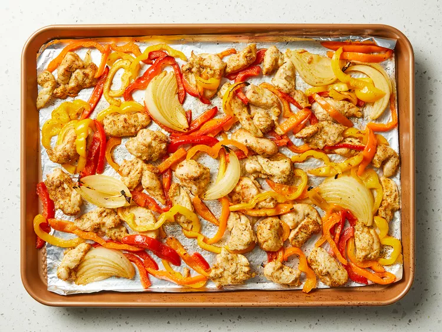

Состав
- 1/3 стакана растительного масла
- 2 чайные ложки порошка чили
- 1 чайная ложка сушёного орегано
- ½ чайная ложка чеснока
- ½ Чайная ложка лукового порошка
- ½ Чайная ложка молотого тмина
- ½ чайная ложка соли
- ¼ чайная ложка молотого черного перца
- 1 щепотка молотого кайенского перца
- 1,5 фунта куриных тендеров, разрезанных на четвертки
- 4 чашки нарезаного болгарского перца любого цвета
- 1 луковица, нарезанная ломтиками
- ¼ Чашка, нарезанная свежая кинза
- ½ лайм, с соком.
Инструкции
Шаг 1
Соберите все ингредиенты.
Шаг 2
Смешайте масло, порошок чили, орегано, чеснок, луковый порошок, тмин, соль, чёрный перец и кайенский перец в большом закрывающем пластиковом пакете. Добавьте куриные тендеры, болгарский перец и лук; Запечатайте пакет и встряхните, чтобы смешать. Маринуйте в холодильнике, от 30 минут до 2 часов.
Шаг 3
Разогрейте духовку до 400 градусов по Фаренгейту (200 градусов Цельсия). Выложите противень с ободкой алюминиевой фольгой.
Шаг 4
Наложите куриную смесь на подготовленную сковороду.
Шаг 5
Запекайте в разогретой духовке, помешивая наполовину, пока курица не станет розовой, а болгарский перец не станет мягче, 15–20 минут. Мгновенный термометр, вставленный в центр курицы, должен показывать не менее 165 градусов по Фаренгейту (74 градуса Цельсия).

Шаг 6
Посыпьте кинзой и вылейте сок лайма на куриную смесь; Размешивайте для распределения. Подавайте горячим с тёплыми тортильями и любимыми начинками фахиты.
Записка повара
Используйте смесь красного, жёлтого и зелёного болгарского перца для цвета и сладости.
Я подаю с мисками с тёртым сыром, сметаной, сальсой и гуакамоле, чтобы каждый мог взять за себя. Курица также вкусна с рисом и чёрной фасолью — более сытное блюдо.